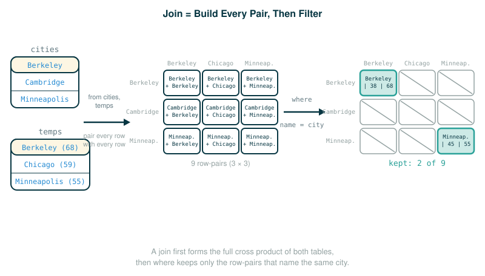

4.3.3 Joins, Aliases, and Dot Expressions
So far every query you have written has pulled rows from a single table. Real databases almost never keep everything in one table. They spread related facts across several tables, and a question worth asking usually needs facts from more than one of them.
By the end of this lesson you will be able to do four things. You will combine two tables into one by listing them in a from clause, which pairs every row of one table with every row of the other. You will use a where clause to keep only the row pairs that actually go together. You will give a table a temporary nickname with an alias so the same table can appear twice in one query. And you will use a dot expression to say exactly which table a column comes from. At the end you will be able to explain how a join differs from a union, the other tool you already have for combining tables.
The mental move that makes all of this click: a join does not magically know which rows belong together. It first builds every combination, and then a condition you write throws away the ones you do not want. Hold onto that two-step picture; it is the whole lesson.
Two Stacks of Cards
Imagine you are holding two stacks of index cards.
The first stack is city cards. Each card names a city and records where it sits on the map. You already built this table in an earlier lesson; it is called cities, and it stores a latitude, a longitude, and a name for Berkeley, Cambridge, and Minneapolis.
The second stack is temperature cards. Each card names a city and records that city's average high temperature.
Now suppose someone asks: "For each city, show me both its latitude and its temperature." Neither stack alone can answer that, because no single card holds both pieces of information. You have to set the two stacks side by side and line them up.
Here is the honest, mechanical way a database does that. It does not cleverly find matches first. It lays down every city card next to every temperature card, producing a big pile of pairs:
Berkeley city card + Berkeley temp card
Berkeley city card + Chicago temp card
Berkeley city card + Minneapolis temp card
Cambridge city card + Berkeley temp card
...Only after that pile exists do you walk through it and keep the pairs where the two cards name the same city. The pile is the join. The "keep the ones that match" step is the where clause. Everything in this lesson is a precise version of those two moves.
Building a Second Table
To have something to join with, the original text introduces a second table describing the mean daily high temperature of different cities. It is built exactly the way you built cities: a chain of one-row selects glued together with union, wrapped in create table.
create table temps as
select "Berkeley" as city, 68 as temp union
select "Chicago" , 59 union
select "Minneapolis" , 55;As an interactive session, that looks like this:
sqlite> create table temps as
...> select "Berkeley" as city, 68 as temp union
...> select "Chicago" , 59 union
...> select "Minneapolis" , 55;The temps table has two columns. The first row names them, so every later row inherits those names:
| city | temp |
|---|---|
| Berkeley | 68 |
| Chicago | 59 |
| Minneapolis | 55 |
Notice something important for what follows. In the cities table, a city's name lives in a column called name. In the temps table, the city's name lives in a column called city. Same idea, different column name. Lining those two columns up is exactly the relationship a join will let us express.
Joining Two Tables
To combine two tables, you separate their names with a comma in the from clause of a select statement. The original text states the rule plainly: when tables are joined, the resulting table contains a new row for each combination of rows in the input tables. If the left table has rows and the right table has rows, then the joined table has rows.
Start with the smallest possible warm-up so the multiplication is obvious. Suppose you joined a 2-row table of sizes with a 2-row table of colors:
sizes: small, large
colors: red, bluePairing every size with every color gives four combinations: small-red, small-blue, large-red, large-blue. Two times two is four. The join did no thinking. It just produced every pair.
Now the official join. The query asks for all columns of the combination of cities and temps:
select * from cities, temps;Walk the select clause one token at a time. The single final row states the rows it returns.
select * from cities, temps;
├─ select ...... begin a query, then list what each result row should contain
├─ * ........... every column, taken from all the joined tables in order
├─ from ........ name the source tables for the rows
├─ cities ...... the left table (3 rows: latitude, longitude, name)
├─ , ........... join: pair every left row with every right row
├─ temps ....... the right table (3 rows: city, temp)
└─ returns ..... all 9 row-pairs, each holding cities' 3 columns then temps' 2 columnsHere is the full interactive session. Because cities has three rows and temps has three rows, the result has rows, and each row carries all three columns of a cities row followed by both columns of a temps row:
sqlite> select * from cities, temps;
38|122|Berkeley|Berkeley|68
38|122|Berkeley|Chicago|59
38|122|Berkeley|Minneapolis|55
42|71|Cambridge|Berkeley|68
42|71|Cambridge|Chicago|59
42|71|Cambridge|Minneapolis|55
45|93|Minneapolis|Berkeley|68
45|93|Minneapolis|Chicago|59
45|93|Minneapolis|Minneapolis|55Read one line to make the column order concrete. The first row is 38|122|Berkeley|Berkeley|68. The first three values, 38, 122, and Berkeley, are the latitude, longitude, and name from a cities row. The last two, Berkeley and 68, are the city and temp from a temps row. Most of these nine rows are nonsense pairings, such as Cambridge's location next to Berkeley's temperature. That is expected. A raw join is deliberately unselective; narrowing it down is the next step.

Tracing How the Nine Rows Appear
It helps to see the order the rows come out. Think of two nested passes. The outer pass walks the left table top to bottom. For each left row, the inner pass walks the entire right table top to bottom, emitting one combined row each time.
left = Berkeley(38,122): pair with Berkeley(68), Chicago(59), Minneapolis(55) -> rows 1-3
left = Cambridge(42,71): pair with Berkeley(68), Chicago(59), Minneapolis(55) -> rows 4-6
left = Minneapolis(45,93): pair with Berkeley(68), Chicago(59), Minneapolis(55) -> rows 7-9Three left rows, each fanning out into three combined rows, gives the nine rows above. This nested-pass picture is exactly what the Python checkpoint at the end of this lesson makes runnable.
Table Aliases
Tables may have overlapping column names, so you need a way to say which table a column belongs to. A table may even be joined with itself, so you need a way to tell the two uses apart. SQL solves both problems with aliases: inside a from clause, the keyword as gives a table a temporary nickname for the duration of that one query.
The classic reason you need this is a self-join. Suppose you want to compare every city's temperature with every other city's temperature. You only have one temps table, but you need two copies of it in the same query. If you wrote from temps, temps, the query would have no way to tell the two copies apart. Aliases fix that:
from temps as a, temps as bNow the first copy answers to the name a and the second answers to the name b. They are the same underlying table, but inside this query they have distinct names, so you can pair a row from a with a row from b and talk about each one separately. An alias copies no data; it is just a temporary label that exists only while this query runs.
Dot Expressions
Once two tables (or two copies of one table) are in play, a bare column name like city is ambiguous: it could come from a or from b. A dot expression removes the ambiguity by naming the table first, then the column:
a.city
b.city
a.temp
b.tempRead a.temp as "the temp column of the table currently named a." This looks like Python's attribute access, but it is not the same thing. In SQL a dot expression is purely a way to disambiguate which table a column is drawn from.
A single dot expression breaks down cleanly. The final row states what it refers to:
a.temp
├─ a ........... the table alias (here, the first copy of temps)
├─ . ........... selects a column from that specific table
├─ temp ........ the column name within that table
└─ refers to ... the temp value of the row currently drawn from copy aWith aliases and dot expressions together, the original text computes the temperature difference between pairs of unequal cities. The alphabetical ordering constraint in the where clause, a.city < b.city, ensures that each pair appears only once in the result.
Before the official query, a one-line bridge for the new piece. The selected expression a.temp - b.temp is ordinary arithmetic on two columns: take the temperature from copy a and subtract the temperature from copy b. If a is the row for Berkeley (68) and b is the row for Chicago (59), then a.temp - b.temp is . (As you read the official output below, you will notice the printed first row says 10 rather than 9; that mismatch is an inconsistency in the original text itself, flagged where it appears.)
select a.city, b.city, a.temp - b.temp
from temps as a, temps as b where a.city < b.city;Follow the select clause token by token. The final row states the rows it returns.
select a.city, b.city, a.temp - b.temp from temps as a, temps as b where a.city < b.city;
├─ select ...... begin a query and list the result columns
├─ a.city ...... the city name from copy a
├─ , ........... separates the selected columns
├─ b.city ...... the city name from copy b
├─ , ........... separates the selected columns
├─ a.temp ...... the temperature from copy a
├─ - ........... subtraction operator
├─ b.temp ...... the temperature from copy b
├─ from ........ name the source tables
├─ temps as a .. the first copy of temps, nicknamed a
├─ , ........... join: pair every a row with every b row
├─ temps as b .. the second copy of temps, nicknamed b
├─ where ....... keep only the pairs that satisfy the condition
├─ a.city ...... the city name from copy a
├─ < ........... less-than test, comparing the two names alphabetically
├─ b.city ...... the city name from copy b
└─ returns ..... 3 rows, one per ordered pair: Berkeley|Chicago|10, Berkeley|Minneapolis|15, Chicago|Minneapolis|5The interactive session returns three rows:
sqlite> select a.city, b.city, a.temp - b.temp
...> from temps as a, temps as b where a.city < b.city;
Berkeley|Chicago|10
Berkeley|Minneapolis|15
Chicago|Minneapolis|5Two things are worth slowing down on here.
First, the condition a.city < b.city compares names, not temperatures. It uses the standard alphabetical ordering of strings: "Berkeley" < "Chicago" is true, "Chicago" < "Minneapolis" is true, and so on. Its only job is to fix an order on the pair.
Second, that ordering is what prevents duplicates. Without it, the self-join would produce both Berkeley, Chicago and Chicago, Berkeley, which are the same unordered pair counted twice (and it would also pair every city with itself). By insisting that the first city come alphabetically before the second, each unordered pair of distinct cities survives exactly once. Because the order is fixed, the subtraction a.temp - b.temp is computed in that same fixed direction: for the Berkeley-Chicago pair, a is Berkeley and b is Chicago, so the result is a.temp - b.temp, the temperature difference between the two cities.
One honest caveat about that first row. Given the temps values built above (Berkeley 68, Chicago 59), the Berkeley-Chicago difference works out to , yet the original text prints Berkeley|Chicago|10. The printed output reproduced above is faithful to Composing Programs, but the source is internally inconsistent here: its stated temperatures and its printed difference do not agree. Trust the arithmetic over the printed figure, and read the 10 as a known typo in the original rather than a result you should be able to reproduce from the data.
Join Versus Union
You now have two ways to combine tables in SQL, and the original text emphasizes that together they give the language a great deal of expressive power. It is worth being precise about how they differ, because they are easy to mix up.
A union stacks rows. It takes two tables that have the same shape (the same number and kind of columns) and pours their rows into one combined table. The result is as wide as either input and as tall as both put together.
A join sets tables side by side. It pairs every row of one table with every row of the other, so the result is as wide as both inputs combined and, before any where clause, as tall as the product of their row counts.
union: table A's rows, then table B's rows (stacked vertically; widths must match)
join: every A row paired with every B row (set side by side; widths add up)The sizes grow in different ways, and this is the cleanest way to remember the distinction. A union grows by addition: rows. A raw join grows by multiplication: rows. Whenever you need to ask a question that draws facts from two different tables at once, reach for a join; whenever you just need to pile compatible rows together, reach for a union.
⚠Common Beginner Traps
- Assuming a raw join already matches related rows. It does not. It first builds every combination of rows, so without a
whereclause you get nonsense pairings such as Cambridge's location next to Berkeley's temperature; thewhereclause is what expresses the relationship and keeps only the meaningful pairs. - Writing
==for equality. SQL tests equality with a single=, unlike Python. - Thinking an alias copies a table.
temps as adoes not duplicate any data. It is a temporary name that exists only for the duration of the query. - Reading
a.city < b.cityas a temperature comparison. It compares the two city names alphabetically; its purpose is to order each pair so it appears only once. - Reading a dot expression as Python attribute access. In SQL,
a.tempsimply means "thetempcolumn of the table nameda," a way to say which table a column comes from. - Forgetting why a city vanishes after a
wherefilter. A row survives aname = cityjoin only when both tables describe that same city; a city present in just one table cannot match.
✓Check Your Understanding
- One table has 4 rows and another has 6 rows. How many rows does their raw join (with no
whereclause) contain? - Suppose
tempswere instead built with just two rows, Cambridge 50 and Denver 60, and you ranselect name, latitude, temp from cities, temps where name = cityagainst the same three-rowcitiestable. How many rows does the raw join produce before thewhereclause, and which rows survive it? - What problem do table aliases solve, and what does
temps as a, temps as bset up? - In the temperature-difference query, what does the expression
a.temp - b.tempcompute, and what controls whether a given city plays the role ofaorb? - State the difference between a union and a join in terms of how the number of result rows grows.
Show the answers
- The raw join has
24rows. A join pairs each of the 4 rows from one table with each of the 6 rows from the other, and . - The raw join produces rows. The
whereclause keeps only pairs wherenameequalscity, and the single surviving row isCambridge|42|50: it is the only pair where both tables name the same city. Berkeley and Minneapolis fall out because the newtempshas no row for them, and Denver falls out becausecitieshas no row for it. - Aliases give a table a temporary name inside one query, which lets the same table appear more than once without ambiguity and lets you say which table a column comes from.
temps as a, temps as bsets up two independently named copies oftempsso each row of the first copy can be paired with each row of the second. - It computes the temperature of the row currently drawn from copy
aminus the temperature of the row from copyb. The conditiona.city < b.cityfixes the order: the alphabetically earlier city isaand the later city isb, so the subtraction always runs in that direction. - A union stacks compatible rows, so its row count grows by addition (). A join pairs every row with every row, so a raw join's row count grows by multiplication ().
§Summary
A join combines rows from more than one table by listing the tables, separated by commas, in a from clause. The raw join is unselective: it produces one row for every combination of input rows, so joining an -row table with an -row table yields rows. A join is therefore almost always paired with a where clause that expresses the relationship between the tables and keeps only the meaningful pairs, using a single = for equality. When a table appears more than once, or when two tables share column names, an alias introduced with as gives each use a temporary name, and a dot expression like a.temp says which table a column is drawn from. Join and union are the two ways to combine tables: a union stacks compatible rows and grows by addition, while a join pairs rows and grows by multiplication.
▶Step-Through Checkpoint
This checkpoint is a Python model of a join, built from two nested loops: each table is a list of rows, and each row is a dictionary of column names to values. Stepping through it lets you watch the nested loop run — what a step-by-step visualizer would draw as an environment diagram: the cities and temps row dictionaries are stored in memory, and the comprehension's outer c and inner t move through them one at a time, like an outer loop and an inner loop. You watch pairs accumulate nine (c, t) tuples before matches keeps the three-value tuples whose c["name"] equals t["city"]. Before you step through the block below, write down three predictions: whether matches gains its first entry before or after pairs is completely built, what one element of pairs holds (two whole row dictionaries, or an already-trimmed three-value tuple), and at which of the nine pairings, in the nested-pass order traced earlier, the two surviving rows turn up.
# (1)
cities = [
{"name": "Berkeley", "latitude": 38},
{"name": "Cambridge", "latitude": 42},
{"name": "Minneapolis", "latitude": 45},
]
temps = [
{"city": "Berkeley", "temp": 68},
{"city": "Chicago", "temp": 59},
{"city": "Minneapolis", "temp": 55},
]
# The join: pair every city row with every temp row.
# The two for clauses are the outer and inner passes from the trace above:
# "for c in cities" is the outer walk, "for t in temps" is the inner walk.
pairs = [(c, t) for c in cities for t in temps]
# The where clause: keep only pairs naming the same city.
matches = [
(c["name"], c["latitude"], t["temp"])
for (c, t) in pairs
if c["name"] == t["city"]
]
print("number of raw pairs:", len(pairs))
print(matches)
Step through it one line at a time and check each prediction as the lists grow. You should have seen pairs finish with all nine combinations, each holding two complete row dictionaries, before matches added anything at all: select * from cities, temps runs to completion before where name = city has any say, the lesson's two-step picture made literal. The two matches turn up at the first and ninth pairings, and the run ends with matches holding exactly ('Berkeley', 38, 68) and ('Minneapolis', 45, 55), the same two rows the SQL query returned.